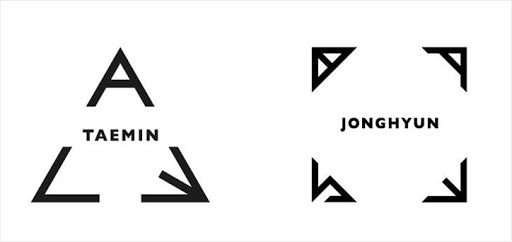

- ACE
- BASE
SHINee SOLO ALBEM MENT
TAEMIN FIRST SOLO ALBEM <ACE>
TAEMIN
There were dreams and goals that i had in my mind from the day i dreamt of becoming an artist.
Although i had to go through many obstacles,i learned that i should always believe in myself.
Strong faith has been the motivation of energy that keeps me going.
As my effort for the dreams has made me become who i am today, i still continue to strive for higher goals with faith.

JONGHYUN FIRST SOLO ALBEM <BASE>
JONGHYUN
Just like my body's stretch marks were a parr of my growing pains.
We will move on endlessly while enduring the pain,under the belief of my growth and this world's growth.
Because the pain creates the room for take-off.
I thank you for the "stretch" that pushed me forward.
As always,I need you.

